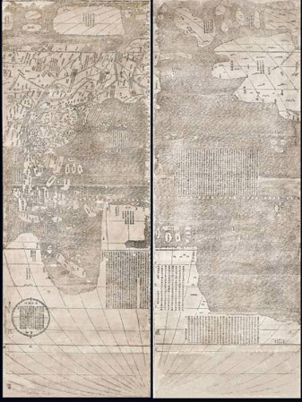

Kunyu wanguo quantu, or Map of the Ten Thousand Countries of the Earth,
608.33 mm x 1820 mm (2 feet by 5.75 feet)
A Jesuit priest, Matteo Ricci (1553-1610) arrived in China in 1583 and, with fellow
Jesuit Michele Ruggieri, established the first Christian mission. In 1597, Ricci was named
Superior or head of the entire Jesuit missionary effort in China.
His world map is a true collaboration between the European scholars of the Jesuit
mission and the Chinese scholars and artisans of the imperial court. Vivid descriptions of
the continents, praise of the Chinese emperor, lunar charts, and scientific tables documenting
the movement of the planets adorn the map, a unique representation of East-West relations in the
early 17th-century. (8)
*Note: This image is just a portion of the map*